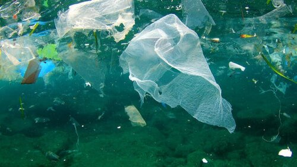
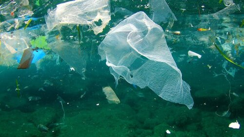
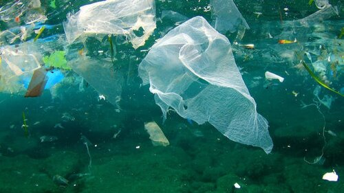

Water is a vital substance that sustains life on Earth. It's a clear, tasteless, and odorless liquid that covers about 70% of our planet's surface.
We can find water in various forms, like lakes, rivers, and oceans. Water has the ability to exist as a solid, liquid, or gas, depending on temperature.
We, humans, drink water to stay hydrated, and we need it to survive. However, water is also essential for the survival of animals and plants, serving as a lifeline for their growth, reproduction, and overall well-being.
Benefits of Drinking Water
For healthy individuals, the average daily water for men is about 2.6 litres (10 cups) and for women about 2 litres (8 cups).
Water keeps every system in the body functioning properly.
Carrying nutrients and oxygen to your cells
Flushing bacteria from your bladder
Aiding digestion
Preventing constipation
Normalizing blood pressure
Cushioning joints
Protecting organs and tissues
Regulating body temperature
Maintaining electrolyte (sodium) balance.
Watter Pollution
Water quality is influenced by direct inputs, such as from a factory or sewage treatment plant, so-called “point source pollution”.
It is also influenced by pollution from widespread sources, such as nutrients and pesticides from farming activities.
Water pollutants released by industry into the air which then fall back to land and sea, so-called “diffuse pollution”.
The main point source of pollution to water is from sewage and waste water treatment, while for diffuse pollution, main sources are from farming and fossil fuel power plants.
While sewage treatment plants are identified as a “point source”, they are not the actual source as they treat what we put down our toilets and sinks.

Purify & Clean The Water
Purifying and cleaning water is crucial for making it safe to drink.
Boiling: Boil water vigorously for at least 1 minute (3 minutes at higher altitudes) to kill most pathogens.
Filtration: Use a filter designed to remove bacteria, parasites, and debris.
Chlorination: Add chlorine bleach or chlorine tablets following recommended dosages and let it sit for 30 minutes.
Distillation: Boil water and collect the condensed vapor, leaving contaminants behind.
UV Purification: Some portable devices use ultraviolet light to kill microorganisms.
Activated Carbon: Used in combination with other methods or in filters to remove chemicals and improve taste.


 
